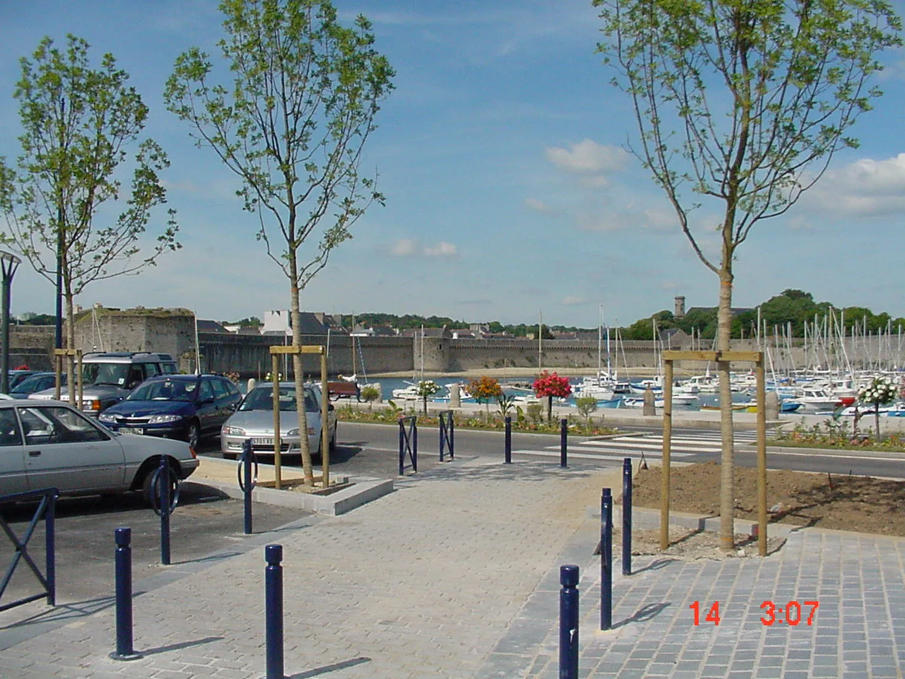
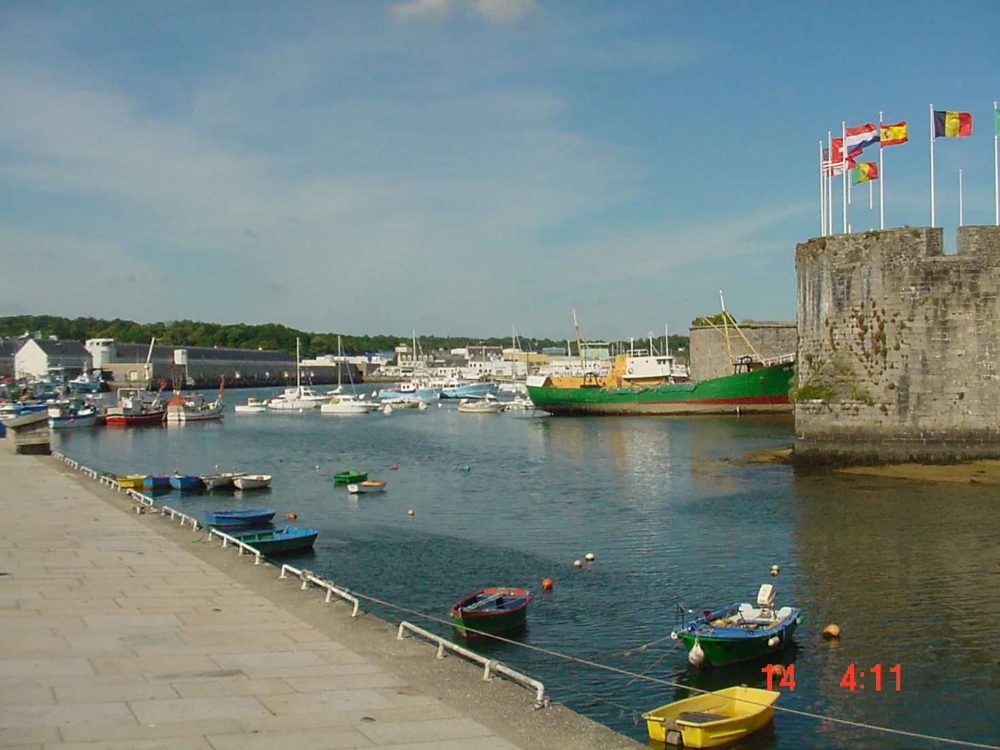
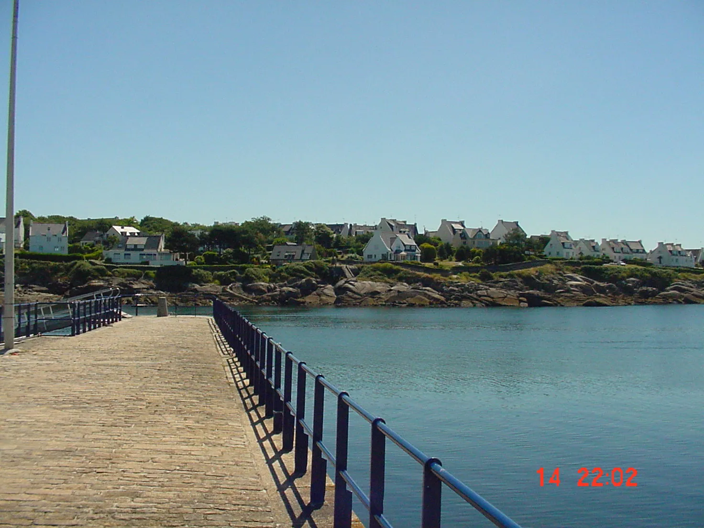
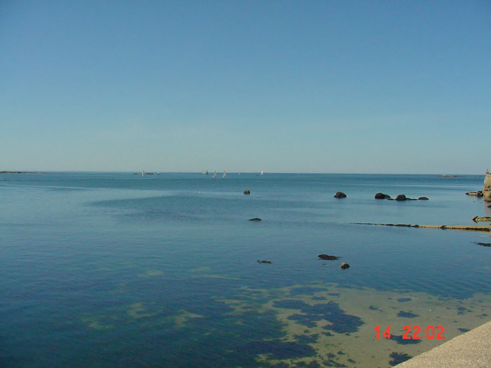
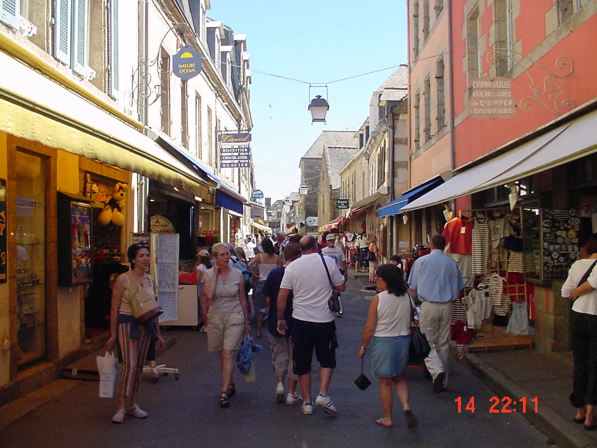
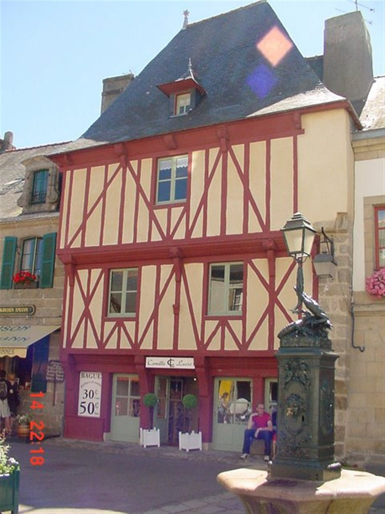
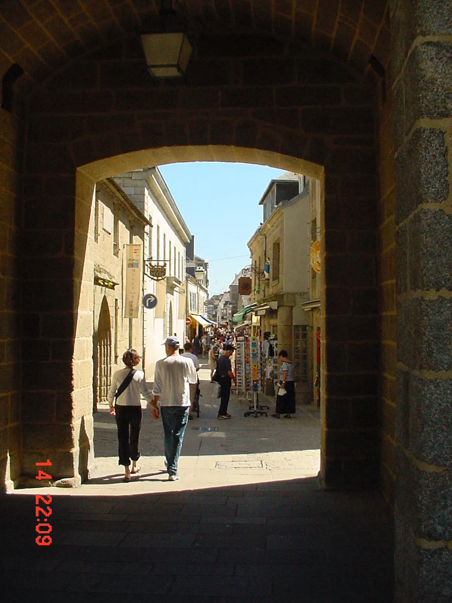

Concarneau
← Back to UK to the MediterraneanOur next port of call was the wonderful little town of Concarneau.
Concarneau Photo Gallery











Our next port of call was the wonderful little town of Concarneau.






